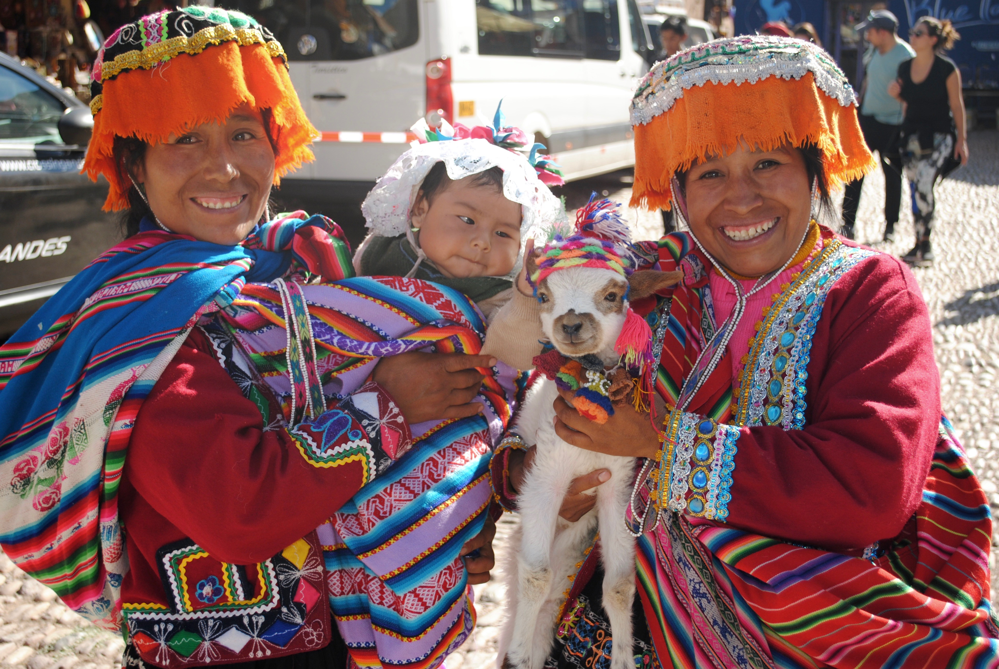
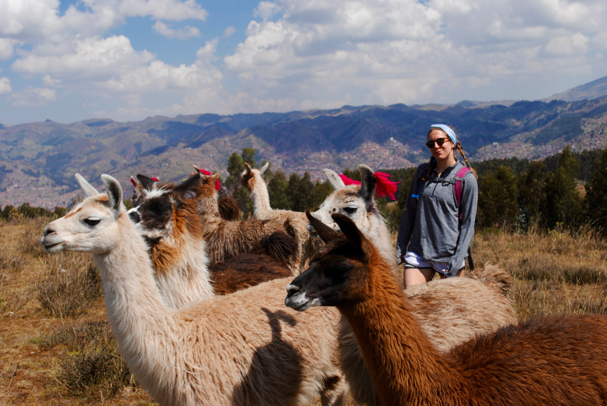
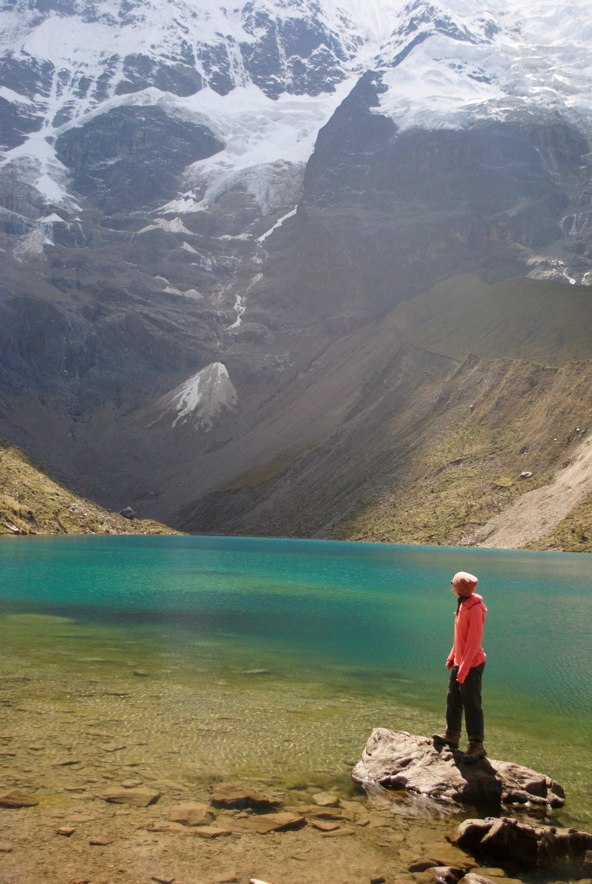
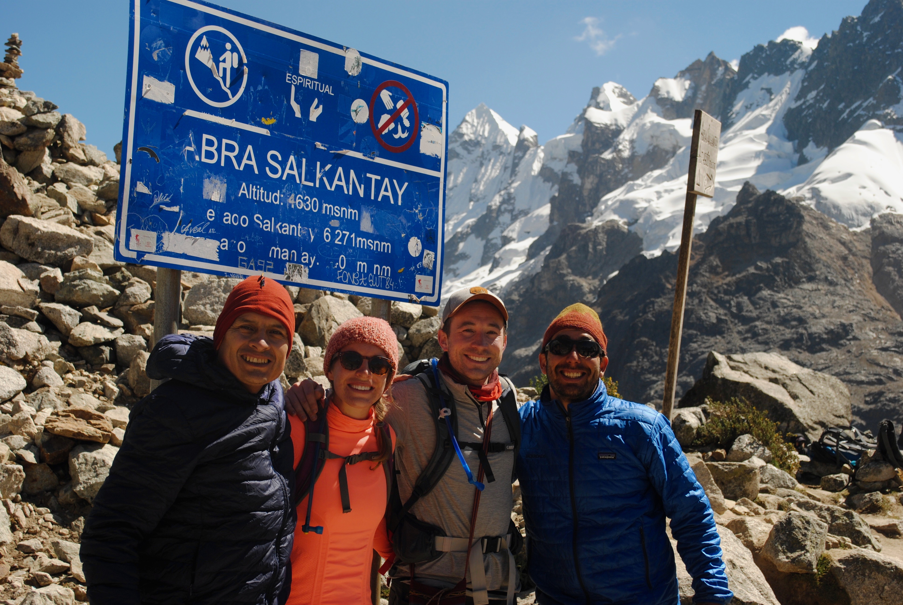
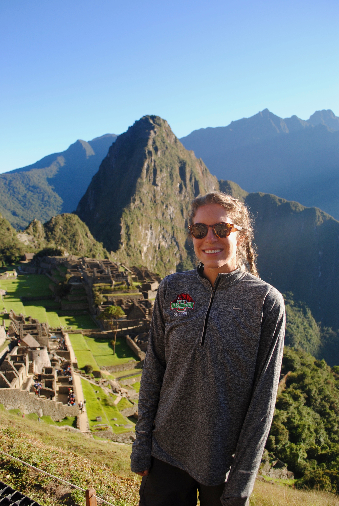

WOW. Where to even begin. My trip to Peru was second to none and I am so excited to tell you guys all about it! Each sight was more beautiful than the last and I gained an entirely new appreciation for this beautiful Earth that we call home. In this blog post, I will go day by day and explain the activities and sights we witnessed in beautiful Peru with Backroads, the World's #1 Most Active Travel Company.
Days 1-2: My family arrived in Cusco, Peru. We immediately felt the elevation gain (11,152 ft), but luckily I came from Denver so the shift wasn't too major. It was a lot more apparent for my family traveling in from sea level. We were picked up at the airport and taken on a beautiful hour and a half drive through the Sacred Valley to our first hotel. While in the car, we learned all about the agriculture of the area and the delicacies (guinea pig, anyone?) We walked through the Pisac Market, ate empanadas, took photos with the locals, and even held a baby Llama. We ended the day in our gorgeous hotel in the heart of the Sacred Valley, and enjoyed dinner and each other's company.
Days 2-3: After our stay in the Sacred Valley, we headed back to Cusco to meet our guides and the other travelers that we would be spending the next 8 days with on our hike from Salkantay to Machu Picchu. We arrived at the Hotel Monasterio, which used to be a monastery for Catholic munks. It was a beautiful hotel in the heart of the city, and the next two days were spent getting to know one another, as well as acclimating ot the altitude, as we would soon be reaching 15,900 ft when we summit Salkantay. Backroads did a very good job of preparing all the body types for the big hike that lay ahead. During one of our acclimation hikes, we had the pleasure of hiking with a 90 year old Farmer and her pack of llamas and alpacas. To say I was peaking would be an understatement...
Day 4-6: Finally the day had arrived--the day we would sit in a car for 4 hours and arrive at the trailhead to embark on our 8 day trek from the Andes Mountains, to the base of the Amazon, arriving at Machu Picchu. After about 4 miles we reached Soraypampa and witnessed the breathtaking mountain and valley vistas. (If A couple miles after that, we rounded a corner and got our first spectacular look of Humantay Mountain. When we reached the lodge, we saw our first peak of 20,500‐foot, glacier‐covered Salkantay Peak, Inca mythology's most sacred mountain. It was absolutely breathtaking. We arrived at our lodge and relaxed the rest of the night, even drank some Pisco Sours (an egg white based alcoholic beverage that is extremely popular in Peru). We woke up early the next day and began our hike through Soraypampa past modest mountain homes and up to a glacial lake at the base of Humantay Mountain. We had the amazing opportunity to hike with Peruvian priests who come from an extremely remote village. They spoke no English and hiked in sandals, which was quite the sight on the snow capped mountains. They performed a ceremony on the mountain with the panoramic view of Humantay lake and the mountains. I honestly do not have words to describe how humbling and emotional this experience was, and I am so thankful to have had that experience. I can safely say that it was one of the most beautiful things I have ever experienced.
Day 5: This was the big day! We geared up early for an exhilarating high‐altitude trek to Huayraccmachay via Salkantay Pass. After breakfast, we began hiking up the Río Blanco Valley, circling the vaulting Humantay Peak. We spent the full morning making our way to the pass. As the elevation rose and rose, it became harder for some in the group to keep up and many breaks were taken. When we finally reached the pass, we saw the thousands of apachetas (small stone markers) left by pilgrims as spiritual offerings to Pachamama (or "Mother Earth") for a good trek and good health. We reached Incachiriaska, the highest point on the trail and the pass at 15,190 feet, we saw stunning views of the Vilcabamba Range and the towering southern face of Mount Salkantay. It was such an accomplishment, and everyone was in great spirits. Really cool moment on the trip!
Day 6-7: The next few days were spent transitioning from the mountain peaks of Salkantay, to the jungle, humid air of entering the Amazon. We spent our days hiking through forest and seeing amazing plants and animals. We had a great time enjoying each other's company, eating delicious food, and gearing up to see the main site of this trip: Machu Picchu.
Day 8: The day finally came, the wonder of the world that the entire trip was based around: Machu Picchu. David (my brother) and I got up very early to go with Nice for an early look and stair-stepper challenge of Machu Picchu Mountain. The journey to the top made for an incredible photo opportunity and insane, almost birds-eye-view of the ruins. We met up with the rest of the group afterwards, and spent the rest of the morning admiring the painstakingly restored masonry, relishing the incredible views and explore highlights (including the Inca Drawbridge), learning from a local expert who provided insight into the astrological designs created by the sun‐worshipping Inca, the exquisite stonework of the temples and other structures, and the fascinating story of Machu Picchu's discovery. It was an amazing day, and it was extremely cool to watch my dad, who has wanted to see Machu Picchu for as long as I can remember. It was such a special day and trip.
This trip was back in May, and I still remember it so vivdly. It has been so fun to be able to reminisce on the memories from this unforgettable experience, while also being able to showcase what I have been learning in this coding bootcamp. I am excited to showcase more of my skills as the months go on, and share with you all my traveling stories and hopefully, inspire you all to travel to different areas of the world.